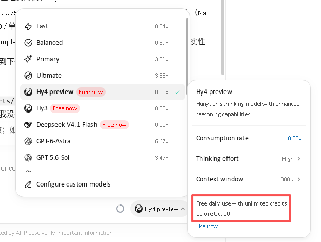

为什么选择 WorkBuddy？

WorkBuddy 是腾讯推出的 AI 办公助手，国际版（workbuddy.ai）能用 GPT-6-Astra，目前限时免费开放多个大模型：
- DeepSeek 4.1 — 推理能力强劲
- 混元 3 — 腾讯自研，中文理解优秀
- 混元 4 Preview — 最新版本，尝鲜体验
限时不限量啊，本着不用白不用的心理，一定要安排上。
你用我的链接，我得100积分，你得350积分，积分当然是拿来换Tokens用的。看到这里，你已经默默地跑去下载使用了，不需要再读下去了。
但我想跑在 Linux 系统里
WorkBuddy 官方只支持 Windows 和 macOS。我也是在笔记本的 Windows 11 里装上，用了一天。但因为我主力是 Linux 系统的台式机，同时开着两台电脑盯着它干活，不爽啊。所以我要让它跑在 Linux 上。
能用其实不难，但它不同于其它软件，不是能用就行 —— 你是要让它干活的，得给它一整套工具。在 Wine 里搞？这是个无底洞。你搞个虚拟机，还是得装一堆东西。明明 Linux 是 AI 最友好的，有一整套的工具。既然让它跑在 Linux 上，为什么不能让它用 Linux 呢？
因为 WorkBuddy 跑在 Windows 上，它的宿主系统就是 Windows；虽然宿主之上，还有个宿主是 Linux，但它「看不到」—— 能通过 Wine 的 Z: 盘读写 Linux 的文件，却无法直接运行 Linux 的程序。更麻烦的是，它其实连 Windows 的程序 也跑不起来：WorkBuddy 自带的命令行是 PortableGit 1.2.0，其 Cygwin 运行时在 Wine 下会报 Couldn't compute FAST_CWD pointer，结果是 bash 只能执行 echo、pwd 这类 shell 内建命令，一个子进程都 fork 不出来 —— 实测 ls、cat、cmd.exe，甚至 WorkBuddy 自带的 node.exe，全部无输出、返回 1。所以「放个假的 .exe（其实是 shell 脚本）让 Wine 转调 Linux 命令」也是行不通的：它依赖某个进程去启动这个 shim，而这里连启动动作本身都做不到。
解决的思路就是 CS 模型 —— 把 WorkBuddy 的宿主 Wine 当成客户端，把 Wine 的宿主 Linux 当成服务器端，传输层不是网络，而是两边都能读写的那块共享文件系统。不是二十几年的老司机，可能想不出这方案。有思路了，操作起来就非常具有可行性：需要干活时，客户端往服务器端的任务目录里投一个脚本，服务器端跑个 Watcher 盯着，跑完把输出写回结果目录，客户端再去读。再把规则写进 WorkBuddy 的全局记忆，让它每次开会话都知道该怎么做。于是你直接在 WorkBuddy 里提需求，它就像个原生 Linux 程序一样自己安排活儿了 —— 所以我称之为“越狱”。
环境准备
系统要求
- Linux 发行版（本文以 Ubuntu/Debian 系为例）
- Flatpak 支持
安装 Bottles
Bottles 是一个图形化的 Wine 容器管理工具，比手动配置 Wine 省心很多。
flatpak install com.usebottles.bottles安装完成后从应用菜单启动 Bottles。
创建 WorkBuddy 容器
1. 新建 Bottle
打开 Bottles，点击「新建」：
- 名称：workbuddy
- 类型：Application（应用程序）
- 架构：win64
创建过程中 Bottles 会提示安装一些组件（Runner、DXVK 等）。
2. 解决组件下载问题
如果你在国内，可能会遇到组件下载失败的问题——Bottles 从 GitHub 下载，而 GitHub 在国内不太稳定。
解决方案：使用 GitHub 镜像
实测可用的镜像：gh.ddlc.top
手动下载组件：
# 下载 Wine Runner（soda-11.0-10）
wget https://gh.ddlc.top/https://github.com/bottlesdevs/wine/releases/download/soda-11.0-10/soda-11.0-10-x86_64.tar.xz
# 验证 MD5
md5sum soda-11.0-10-x86_64.tar.xz
# 应该是：26dd7c203b6722c9702c8b661f27e888
# 解压到 Bottles 的 runners 目录
tar -xJf soda-11.0-10-x86_64.tar.xz \
-C ~/.var/app/com.usebottles.bottles/data/bottles/runners/3. 关闭不需要的组件
WorkBuddy 是 Electron 应用，不需要 DXVK（DirectX 转 Vulkan）。在 Bottle 设置中：
- DXVK：关闭
- VKD3D：关闭
这样可以避免每次启动时弹出安装提示。
安装 WorkBuddy
1. 下载 WorkBuddy 安装包
从 workbuddy.ai 下载 Windows 版安装包（.exe）。
2. 在 Bottle 中运行安装程序
在 Bottles 中：
- 选择 workbuddy 容器
- 点击「运行 EXE」
- 选择下载好的安装包
按正常 Windows 流程完成安装。
解决中文显示问题
安装完成后运行 WorkBuddy，你可能会发现：程序能打开，但界面上的文字全部看不见。
这是因为 Wine 容器里缺少 Windows 字体。
安装字体
# 进入 Bottle 的字体目录
FONTS_DIR=~/.var/app/com.usebottles.bottles/data/bottles/bottles/workbuddy/drive_c/windows/Fonts
cd "$FONTS_DIR"
# 复制系统已有的 Windows 核心字体（如果之前装过）
cp /usr/share/fonts/truetype/msttcorefonts/*.ttf . 2>/dev/null
# 安装 Noto Sans CJK 用于中文显示
sudo apt install fonts-noto-cjk fonts-noto-cjk-extra
# 复制 Noto 字体
cp /usr/share/fonts/opentype/noto/NotoSansCJK*.ttc .
cp /usr/share/fonts/opentype/noto/NotoSerifCJK*.ttc .
# 创建 Windows 字体别名
ln -s NotoSansCJK-Regular.ttc msyh.ttc # 微软雅黑
ln -s NotoSansCJK-Bold.ttc msyhbd.ttc # 微软雅黑粗体
ln -s NotoSansCJK-Regular.ttc simsun.ttc # 宋体
ln -s NotoSansCJK-Regular.ttc simhei.ttf # 黑体配置字体替换
创建字体替换注册表文件：
cat > /tmp/fonts.reg << 'EOF'
Windows Registry Editor Version 5.00
[HKEY_LOCAL_MACHINE\Software\Microsoft\Windows NT\CurrentVersion\FontSubstitutes]
"Segoe UI"="Tahoma"
"Segoe UI Black"="Tahoma"
"Segoe UI Light"="Tahoma"
"Segoe UI Semibold"="Tahoma Bold"
"Segoe UI Semilight"="Tahoma"
"Microsoft YaHei"="Noto Sans CJK SC"
"Microsoft YaHei UI"="Noto Sans CJK SC"
"SimSun"="Noto Sans CJK SC"
"SimHei"="Noto Sans CJK SC"
EOF导入注册表：
WINEPREFIX=~/.var/app/com.usebottles.bottles/data/bottles/bottles/workbuddy \
~/.var/app/com.usebottles.bottles/data/bottles/runners/soda-11.0-10/bin/wine regedit /tmp/fonts.reg重启 WorkBuddy，文字应该能正常显示了。
创建桌面快捷方式
每次都从 Bottles 启动太麻烦，创建一个桌面快捷方式：
cat > ~/.local/share/applications/workbuddy.desktop << 'EOF'
[Desktop Entry]
Name=WorkBuddy AI
Comment=Tencent AI Office Assistant
Exec=env WINEPREFIX="/home/YOUR_USERNAME/.var/app/com.usebottles.bottles/data/bottles/bottles/workbuddy" /home/YOUR_USERNAME/.var/app/com.usebottles.bottles/data/bottles/runners/soda-11.0-10/bin/wine "C:\\users\\YOUR_USERNAME\\AppData\\Local\\Programs\\WorkBuddyAI\\WorkBuddyAI.exe"
Type=Application
StartupNotify=true
Icon=workbuddy
Categories=Office;Application;
Terminal=false
EOF
# 记得把 YOUR_USERNAME 替换成你的用户名现在可以从应用菜单搜索「WorkBuddy」直接启动了。
进阶：让 WorkBuddy 用上宿主机的工具链（R / Python / git / make）
按上面的步骤装好之后，你会撞上一个尴尬的问题：WorkBuddy 能读能写文件，但它的 Bash 工具是个哑弹 —— 在 Wine 里跑不起任何外部命令，R、git、python、make 一个都用不了。做数据分析、生信、工程开发的话，这基本等于废掉一半能力。
这一节就解决这件事。
先确认症状
在 WorkBuddy 的对话里执行：
echo builtin-ok # ✅ 有输出
/bin/echo external-ok # ❌ 无输出
ls / # ❌ 无输出，rc=1如果 echo 有输出、而 /bin/echo 和 ls 没有，那你遇到的就是本文说的情况。原因是 WorkBuddy 自带的是 PortableGit 1.2.0，它的 Cygwin 运行时在 Wine 下会报：
Cygwin WARNING: Couldn't compute FAST_CWD pointer.
后果是 bash 只能跑 shell 内建命令，fork 不出任何子进程。
想确认到底是”完全没 fork”还是”只是 stdout 丢了”，再跑两条：
/bin/echo hello > /tmp/fork_probe.txt # 之后 cat 这个文件 → 是空的
node -e "require('fs').writeFileSync('/tmp/node_probe.txt','x')" # 之后这个文件根本不存在文件为空 / 不存在，说明子进程压根没起来。
为什么”做个假 exe 转调 Linux 命令”行不通
第一反应通常是：既然 Z:\ 就是 Linux 根目录，那在 Z: 上放一个”假的 .exe”（实际是 shell 脚本），让 Wine 去执行它，不就能转调到宿主机的 Linux 工具了吗？winetricks 也有类似的 wrapper 机制。
试过了，行不通。原因很直接：
| 尝试 | 结果 |
|---|---|
直接执行宿主 ELF（/z/bin/echo） | cannot execute binary file: Exec format error |
start /unix /bin/bash -c ... | rc=1，无任何效果 |
执行 Windows 原生 PE（cmd.exe / where.exe） | rc=1，无输出 |
执行 WorkBuddy 自带的 node.exe / python.exe | rc=1，无输出 |
连原生 Windows 程序都起不来，说明断点在 Wine 之前 —— 是 bash 自己 fork 失败。而任何”靠某个进程去 CreateProcess 这个 shim”的方案，前提都是得先 fork 成功，所以全都没救。这条路可以直接断念。
顺带一提：把 cwd 切到
C:盘再试，结果完全一样，所以跟Z:盘没关系，别在这个方向上浪费时间。
正解：用文件系统搭一座桥
关键点：Wine 的 Z: 盘就是 Linux 的 /，而且是双向可读写的。既然命令传不进去，那就把”要执行的命令”当成文件传进去，让宿主机上的一个常驻进程替我们跑。
架构非常简单：
WorkBuddy (Wine 内) Linux 宿主
------------------------- ----------------------------------
Write bridge/jobs/<id>.sh ───────▶ watcher.sh 循环扫描 jobs/
执行 bash <id>.sh
Read bridge/out/<id>.out ◀─────── stdout + stderr → out/<id>.out
Read bridge/out/<id>.rc 退出码 → out/<id>.rc
Read bridge/out/<id>.done 完成标记 → out/<id>.done
1. 建目录
mkdir -p ~/.workbuddy-ai/bridge/{jobs,out,log}2. 写 watcher
保存为 ~/.workbuddy-ai/bridge/watcher.sh：
#!/usr/bin/env bash
# ---------------------------------------------------------------------------
# WorkBuddy <-> Linux bridge watcher
#
# 运行在 **Linux 宿主** 上（不要在 Wine 里跑）。
# WorkBuddy（运行在 Wine 内，无法 fork 任何子进程）把要执行的脚本丢到
# $BRIDGE/jobs/<id>.sh
# 本守护进程捡起它，执行，并把结果写到
# $BRIDGE/out/<id>.out stdout + stderr
# $BRIDGE/out/<id>.rc 退出码
# $BRIDGE/out/<id>.done 完成标记（空文件）
#
# 启动：
# nohup bash ~/.workbuddy-ai/bridge/watcher.sh >/dev/null 2>&1 &
# ---------------------------------------------------------------------------
set -u
BRIDGE="${BRIDGE:-$HOME/.workbuddy-ai/bridge}"
JOBS="$BRIDGE/jobs"
OUT="$BRIDGE/out"
LOG="$BRIDGE/log"
mkdir -p "$JOBS" "$OUT" "$LOG"
log() { printf '[%s] %s\n' "$(date '+%F %T')" "$*" >> "$LOG/watcher.log"; }
pidfile="$LOG/watcher.pid"
if [ -e "$pidfile" ] && kill -0 "$(cat "$pidfile" 2>/dev/null)" 2>/dev/null; then
echo "watcher already running (pid $(cat "$pidfile"))"
exit 0
fi
echo $$ > "$pidfile"
trap 'rm -f "$pidfile"' EXIT
log "watcher started (pid $$), watching $JOBS"
while true; do
shopt -s nullglob
for f in "$JOBS"/*.sh; do
id="$(basename "$f" .sh)"
running="$OUT/$id.sh"
[ -e "$OUT/$id.done" ] && continue
[ -e "$running" ] && continue
mv -- "$f" "$running" 2>/dev/null || continue
log "run $id"
( cd "$OUT" && bash "$running" ) > "$OUT/$id.out" 2>&1
rc=$?
echo "$rc" > "$OUT/$id.rc"
: > "$OUT/$id.done"
log "done $id (rc=$rc)"
done
sleep 1
done两个细节：用 mv 把任务从 jobs/ 挪到 out/ 来”认领”，避免同一个任务被重复捡起；sleep 1 是轮询间隔，嫌它占资源可以调到 2。
3. 启动
一次性启动：
nohup bash ~/.workbuddy-ai/bridge/watcher.sh >/dev/null 2>&1 &想登录就自动起来，用 systemd 用户级服务：
mkdir -p ~/.config/systemd/user
cat > ~/.config/systemd/user/wb-bridge.service <<'EOF'
[Unit]
Description=WorkBuddy Linux bridge watcher
[Service]
ExecStart=/bin/bash %h/.workbuddy-ai/bridge/watcher.sh
Restart=always
[Install]
WantedBy=default.target
EOF
systemctl --user enable --now wb-bridge.service4. 用法
对 WorkBuddy 来说，只要会写文件和读文件就够了：
- 把要跑的命令写成脚本，写到
Z:\home\<用户名>\.workbuddy-ai\bridge\jobs\<id>.sh - 读
...\bridge\out\<id>.done—— 文件存在就说明跑完了 - 读
out\<id>.out拿输出，out\<id>.rc拿退出码
<id> 别重复，建议 <序号>-<用途>，比如 001-smoke、002-rcheck。脚本里记得先 cd 到项目目录：
cd /home/wang/data/source/omics/ChIPseeker
Rscript -e 'pkgload::load_all("."); testthat::test_dir("tests/testthat")'5. 让 WorkBuddy 每个会话都记得这座桥
光有桥还不够 —— 下次新开会话，WorkBuddy 又会去试那个坏掉的 Bash。把规则写进它的全局记忆文件，Linux 侧的路径是：
<wine-prefix>/drive_c/users/<用户名>/.workbuddy-ai/MEMORY.md
非 Bottles 的默认 prefix 通常是 ~/.wine/drive_c/users/<用户名>/.workbuddy-ai/MEMORY.md。
写进去的内容大概是：
## 运行环境：WorkBuddy 跑在 Linux 宿主机的 Wine 里
- Z:\ = Linux /，宿主 R 在 /z/usr/bin/R，优先用 Linux 侧的 R
### Bash 工具无法执行任何外部进程
- PortableGit 1.2.0 的 Cygwin 报 Couldn't compute FAST_CWD pointer，
只有 shell 内建可用；不要再反复试 Bash
### 可行方案：文件队列桥梁（bridge）
- 投递：Write 到 ~/.workbuddy-ai/bridge/jobs/<id>.sh
- 取结果：Read ~/.workbuddy-ai/bridge/out/<id>.out|.rc|.done
- 投递前先确认 watcher 在跑（看 bridge/log/watcher.log）这一步很关键，否则每次新会话都要重新解释一遍环境。
实测效果
桥搭好之后，我在 ChIPseeker（一个 R/Bioconductor 包）上完整跑了一轮：
R --version→ R 4.6.1- 用
pkgload::load_all()加载源码包，跑testthat全量测试 —— 整套 2 分多钟的测试正常跑完，结果完整回收 - 改完代码后重新投递验证脚本，“修改前 / 修改后”的行为差异直接读回来
也就是说，只要 bridge 在跑，WorkBuddy 就等于拥有了宿主机的完整工具链：R、python、git、make、gcc 全都可用。唯一的差别是异步 —— 它的工作节奏变成”投递 → 等一会儿 → 读结果”，不像本地 shell 那样即时交互。
排错
| 现象 | 检查 |
|---|---|
投递了脚本但 out/ 没动静 | cat ~/.workbuddy-ai/bridge/log/watcher.log，看有没有 run <id>；没有就是 watcher 没在跑 |
WorkBuddy 说找不到 Z:\home\... | Bottles 的 Flatpak 沙箱可能限制了文件系统访问，用 Flatseal 给 Bottles 放开 home，或改用非 Flatpak 的 Wine prefix |
| 任务一直不结束 | 脚本里别写 sudo 之类会等待交互输入的命令，它会一直挂在那儿 |
| 不知道任务成功没有 | 看 out/<id>.rc（0 为成功）和 out/<id>.out（完整 stdout + stderr） |
总结
整个流程回顾：
- 安装 Bottles — Flatpak 一行搞定
- 创建容器 — 选 Application 类型
- 解决下载问题 — 用 gh.ddlc.top 镜像
- 安装 WorkBuddy — 正常跑安装程序
- 修复字体 — 复制字体 + 注册表替换
- 创建快捷方式 — 从应用菜单直接启动
- 搭一座桥（可选但强烈推荐）— 让 WorkBuddy 真正用上宿主机的 R / Python / git / make
现在你可以在 Linux 上免费使用 DeepSeek 4.1 和混元大模型了。再配上最后那座”桥”，它就不只是个聊天窗口 —— 读代码、改代码、跑测试、做数据分析全都能在你的 Linux 环境里落地。